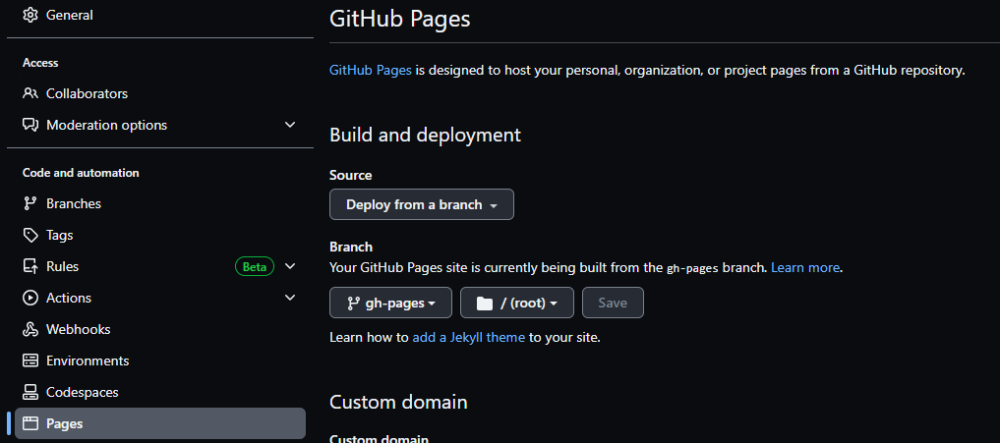

How to self-publish a technical book on Leanpub and Amazon using Quarto
UPDATE: I’ve update this blog post on the 30 of June 2023. I corrected a statement where I said that the _quarto.yml file is where you can choose the version of R to compile the book. That’s wrong, choosing the version of R to compile the book is done on the Github Actions workflow. I’ve also added some answers to questions I got on social media.
So I’ve recently self-published a book on both Leanpub as an Ebook and Amazon as a physical book and thought that it would be worth it to write down how to do it. I’ve wasted some time getting everything to work flawlessly so if you’re looking for a guide on how to create both an ebook and a print-ready PDF for Amazon’s Kindle Direct Publishing service using Quarto, you’ve come to the right place.
If you don’t want to waste time reading, just fork this repo and use that as a starting point. Each time you push a change to the repo, a website, Epub and PDF get generated using Github Actions. If you want to understand the details, read on.
Your book’s dependencies
You should start by creating an renv.lock file. This file will list all the dependencies of your book. For example, if you’re using {ggplot2} to make graphs or {flextable} for tables, the renv.lock file will list them and then this file will be used to download the required packages by Github Actions (more on Github Actions later) to create the book. The template comes with one such renv.lock file, but you should generate one specific to your project. Simply install {renv} and run:
renv::init()
Answer “Y” to the question and wait a little. The renv.lock file should appear alongside the source of your book now. If you need to install more packages to keep writing your book, install them as usual (using install.packages(“package”)) but then don’t forget to create a new renv.lock file using renv::snapshot().
_quarto.yml
Whatever output format, everything gets defined in the _quarto.yml file in the root directory of your book. This file is where you can choose which themes to use for your website for example, which output formats you want to compile your book into, etc. I’ll discuss each option for each format below.
Generating the website
I’m using Github Actions to generate each format of the book. Github Actions is essentially a computer hosted by Github that you can use to run arbitrary commands. These commands must be written in a specific file which must be put in a specific place in your repository. Here is that file for the repo I linked above. I won’t go into details because I’ve explained how Github Actions works here already, but you’ll notice that you can choose a version of R to compile your document and also a different version of Quarto. This can be useful for reproducibility.
Create a new branch called gh-pages and then go to settings, then on the side-bar on the left choose “Actions”, and scroll down. Then, in “Workflow persmissions”, check “Read and Write permissions” and “Allow Github Actions to create and approve pull requests”. Then go to “Pages” which you can find on the side-bar on the left, and choose “Deploy from a branch” under “Build and deployment” and choose “gh-pages” and “root”:

Each time you push, the website to your book will get updated. Here are the options I chose for my website, which you can find in the _quarto.yml file:
html:
theme:
light: flatly
dark: solar
css:
epub.css
So my website is available in two themes, a dark and light one. I highly recommend you also provide two themes. You can also provide a .css file to customize the appearance of you website, and of your ebook (that’s because an Epub is actually a bunch of html files). The .css I’m using is quite simple, the only thing it’s doing is making sure that images won’t be wider than the web-page. You can view the website of this template book here.
Generating an Ebook
Let’s continue with the .epub format. This is an Ebook format that can be read on E-readers such as the Kindle from Amazon. If you want to sell an Ebook on Leanpub (or send it to your Kindle), it needs to pass a tool called epubcheck.
I’ve already written about generating ebooks in the past (here). However, the advice in that blog post was only valid because there were bugs in the version of Quarto that was current at the time and so I showed some workarounds. With the current version, no workarounds are needed anymore, Epubs generated by Quarto now pass epubcheck. Check the source, specifically index.qmd to see how I include graphics.
Generating a print-ready PDF
This was the hardest part: I’m using Amazon’s KDP service to sell physical copies of the book and the PDF needs to be in a specific format. I’m using the 6 x 9 format without bleed, which seems to be the most common. If you look again at the _quarto.yml file, you should see this:
pdf:
keep-tex: true
documentclass: scrbook
classoption: [paper=6in:9in,pagesize=pdftex,headinclude=on,footinclude=on,12pt]
include-in-header:
text: |
\usepackage{fvextra}
\DefineVerbatimEnvironment{Highlighting}{Verbatim}{breaklines,commandchars=\\\{\}}
\areaset[0.50in]{4.5in}{8in}
include-before-body:
text: |
\RecustomVerbatimEnvironment{verbatim}{Verbatim}{
showspaces = false,
showtabs = false,
breaksymbolleft={},
breaklines
% Note: setting commandchars=\\\{\} here will cause an error
}
fig-pos: 'H'What’s important is ‘classoption’:
classoption: [paper=6in:9in,pagesize=pdftex,headinclude=on,footinclude=on,12pt]This is where I can choose the dimensions of the book (6 x 9) and the size of the font (12pt). Then:
include-in-header:
text: |
\usepackage{fvextra}
\DefineVerbatimEnvironment{Highlighting}{Verbatim}{breaklines,commandchars=\\\{\}}
\areaset[0.50in]{4.5in}{8in}
With fvextra and the call to I make sure that long lines of code get wrapped in the PDF. Without this, long lines of code would simply continue outside the margins of the PDF, and Amazon’s KDP doesn’t accept a PDF like this.
: this is the area that well be used for writing. These are the correct dimensions for a 6 by 9 book without bleed. Then, I keep customizing the verbatim environment:
include-before-body:
text: |
\RecustomVerbatimEnvironment{verbatim}{Verbatim}{
showspaces = false,
showtabs = false,
breaksymbolleft={},
breaklines
% Note: setting commandchars=\\\{\} here will cause an error
}Finally, the last option:
fig-pos: 'H'
This ensures that the figures are placed EXACTLY where you say they should be in the final PDF. For those of you that use LaTeX, you know that LaTeX sometimes takes some liberties with figure placement. I’ve been told the lie that LaTeX knows where to place the figures perfectly well many times but I don’t buy it. So use fig-pos: ‘H’ to avoid lots of frustration.
That’s it! You should now be able to generate a book that is print-ready, and an Epub that passes epubcheck as well as website. You can now just focus on writing. Also check the source of index.qmd for to see how to include text in the PDF only (or not show text in the PDF).
My personal experience and some FAQ
Overall, I enjoyed using both Leanpub and Amazon to publish my book. Leanpub is really nice, because they really offer a very nice deal: you get 80% of the sales price as royalties, which is the highest share I’ve seen. Also the people working there are really nice, I’ve had the chance to discuss with Len Epp, Leanpub’s cofounder, in his Frontmatter podcast and would definitely continue using their platform in the future. Regarding Amazon I must say that the experience was quite good as well; the only friction I had was getting the PDF in the right format for printing, but that’s hardly something that Amazon can be blamed for. After all if the PDF’s formatting is bad, the books will look like crap as well. One thing you should know though is that you need to get a VAT number to sell books on Amazon. I live in Luxembourg and getting one is trivial, but in other countries this may be more complex. You should know as well that Leanpub can sell the physical copies of your book, through Amazon, for you. They essentially act as a publisher then. This way, you don’t need to get a VAT number, if that’s difficult for you. But you’ll need to share the Amazon royalties with Leanpub.
When publishing a book through Amazon’s KDP service, you also get access to a basic book cover editor that you can use to create a cover for your book. You can provide an image and then use the editor to create the cover, but you can also provide a ready-made cover if you have the talent to make one using an image editing software. Once you’re done, and click “Publish” on Amazon, the book will get reviewed by a human. This process can take up to three days, but in my case it took only 4 to 6 hours. However, my book was rejected, twice. One time was because one of the images I used in the book had colour bars in the bottom right corner, that I needed to remove, and the other time was because the “g” in my name, “Rodrigues” was cut by the cover editor and it was hard to tell if it was a “g” or a “q”. Once I corrected both issues, the book was available for order on Amazon.com within the day. The other marketplaces, like France and Germany took one day more, and the UK marketplace took 4 days.
References
I’m sorry, I have no idea where I found all of this stuff. I looked for it for some time, and if memory serves most of this came from stackoverflow.